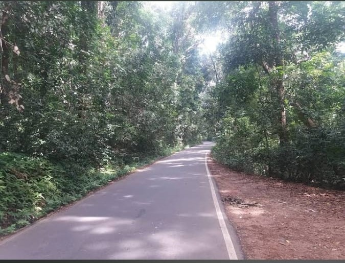
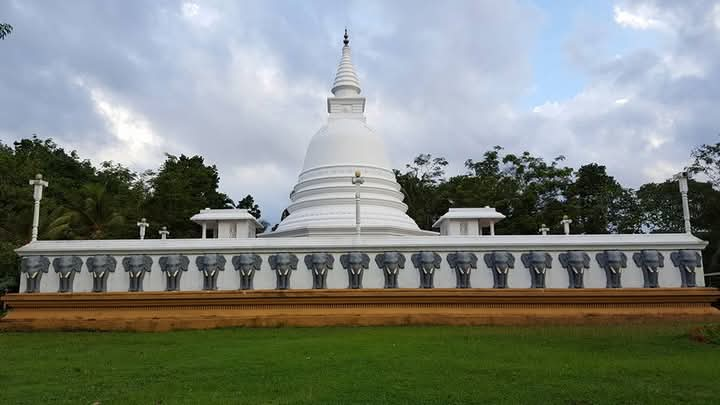
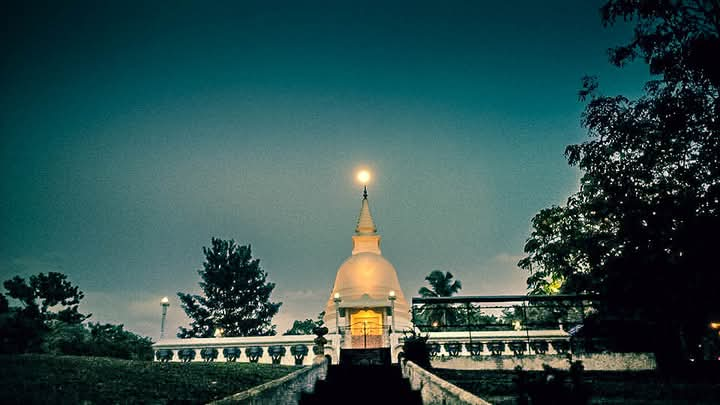

Kiriwandeniya is located in Rambukkana city of Kegalle district.It is very beautiful village.we can reach to the closest boundery of Rambukkana by passing 3.8km from Rambukkana.Also we can come to Kiriwandeniya by using Bolagama road from Annasigala which is located on A1 main road(Colombo Kandy road).The Maha oya river also blows through a boundery of the village. so many peoples have been used to paddy farming.So this village is fertile.There is a very beautiful and sacred tenple in the village.
There is a very beautiful forest in kiriwandeniya village.that's why it is a perfect village
Dodamkohe Forest
Kiriwandeniya Temple

